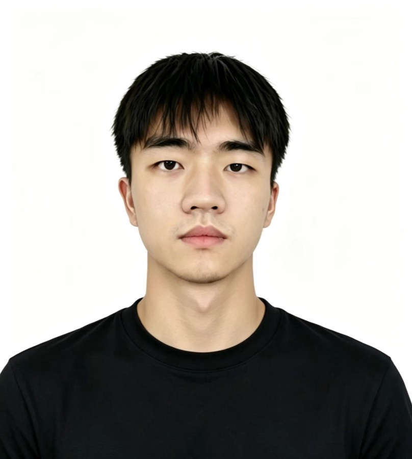

Resume · 2026
汽车技术工程师×独立 AI 开发者
用 AI 把想法落地。 // Never idle.
中南林业科技大学 · 汽车服务工程 · 本科

Profile
5 年汽车技术工程经验，专注维修资料与数据开发；近 2 年主导部门 AI 提效，把重复流程自动化。
把维修手册与诊断资料转化为结构化数据与标准流程，服务研发、测试和翻译团队。
四轮定位 · 参数标定
负责多个品牌的四轮定位参数，以及相关调整流程的开发
VIN 车型识别
开发了几十个品牌的识别规则与车型数据，根据 VIN 码准确解析出品牌、车型与配置
TPMS / IM / BT608
胎压监测 / 防盗匹配 / 电池检测多项目业务支持，高效解决各类问题
EV Kit 2 · 高压测量
新能源高压测量：主导了全流程的高压测量数据与系统图开发，自研配套工具链提升效率
翻译 Agent
为翻译团队开发 AI 翻译与规范整改工具，效率与规范性双提升
资料治理 Agent
把海量维修手册结构化为可检索知识库，让海量资料精准接入 Agent 应用
项目详情可见该网址：favoroo.github.io/Q-profile
汽车服务工程 · 本科
系统掌握汽车构造、电控与诊断体系。
专业前 20% · 校级奖学金 · CET-4
运用 AI 独立开发了多款手机 App、微信小程序与各类引擎的游戏。
作品见个人网站：favoroo.github.io/Huangqian